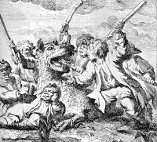
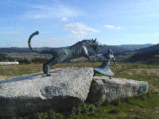
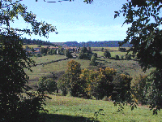

|
Depuis ma plus tendre enfance j'entends parler de cette
bête mythique et ce début de siècle voit
foisonner films, sites web et diverses publications à
son sujet. Je n'ai pas fait d'enquête, je vais me
contenter d'apporter un témoignage local, afin de
transmettre la tradition orale familiale.
Cliquez sur les photos pour voir de plus
près et n'oubliez pas de refermer la fenêtre
!
Entre mars 1764 et le 19 juin 1767 on attribue
à cet animal la mort de 7 jeunes enfants, 30 jeunes
garçons, 44 jeunes filles et 16 femmes. Les attaques
ont été bien plus nombreuses, quelques
victimes ont survécu et d'autres sont
décédées de leurs blessures. Au
début certaines attaques n'ont pas été
consignées dans les registres paroissiaux.

Sur cette gravure la Bête attaque de
jeunes bergers qui lui résistent.
|
Ma grand-mère(1892
1984) était institutrice, grande lectrice
férue d'Histoire de France et abonnée
dès la première heure à
Historia. Ella avait coutume de nous lire ou
raconter des contes et des légendes, le soir
avant de dormir, ou lors d'après-midi
pluvieux. Elle connaissait tous les livres de Mr
Henri Pourrat et achetait, dès leur
parution, les recueils de contes et légendes
ayant rapport à notre région. La "
Bête " n'était pas sa légende
favorite mais elle nous en avait parlé,
évidemment. Lors d'un voyage à
Marvejols elle avait découvert, à un
âge avancé, l'étrange statue la
représentant, mais elle n'a jamais vu celle
d'Auvers, bien sûr.
|

La statue érigée à
Auvers.
|
Quand mon mari m'a fait
découvrir le pays natal de sa mère,
la commune d'Auvers, il a bien sûr
évoqué cette bête et, plus
encore, m'a présenté son grand
père qui savait où l'animal avait
été tué deux siècles
plus tôt par Jean Chastel dit " le Masque ".
Cette mort avait coïncidé avec la fin
des attaques de bergers. La tradition orale locale
situe ce lieu non loin de Chanteloube ( ! ), un
hameau d'Auvers, où vivaient les
ancêtres de ma belle-mère...
(La bête a été
tuée sur la paroisse de Nozeyrolles qui
englobait Auvers à cette époque. De
nos jours nous parlons de commune et non plus de
paroisse.)
|

Le village de Chanteloube (en
arrière plan la forêt de la Margeride)
|

|